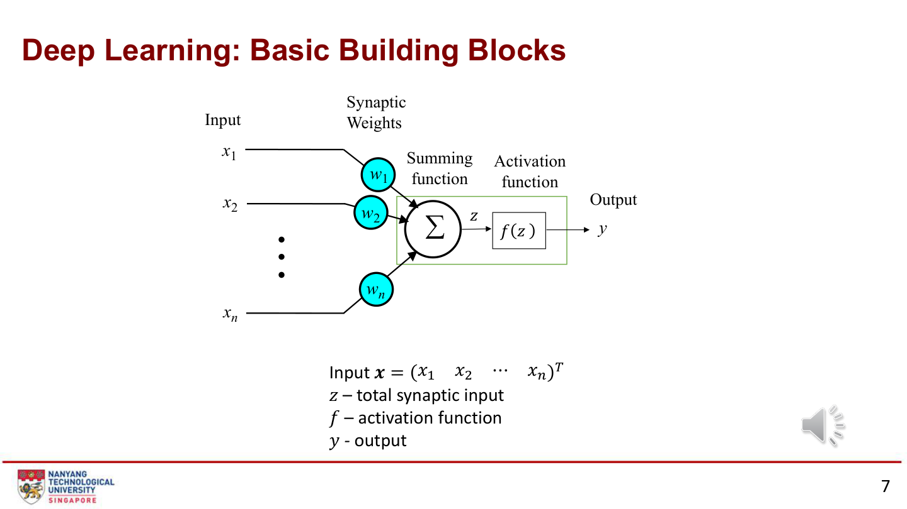
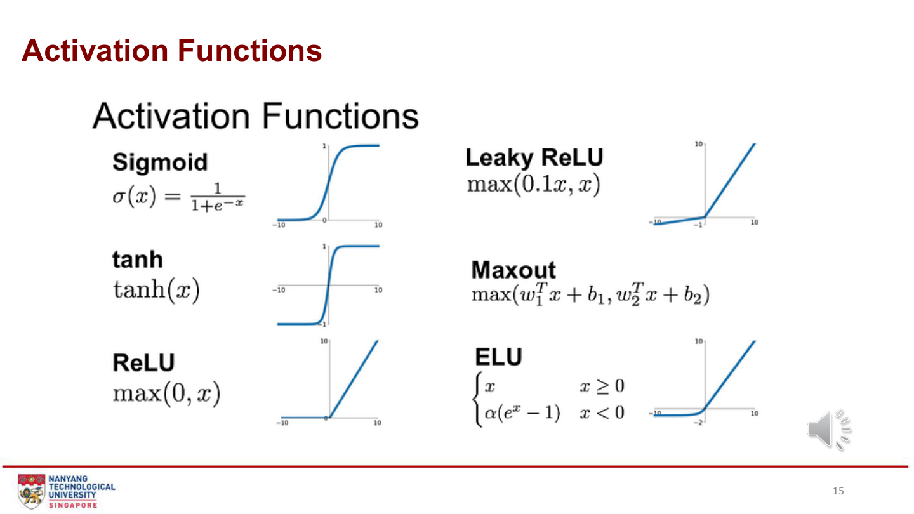
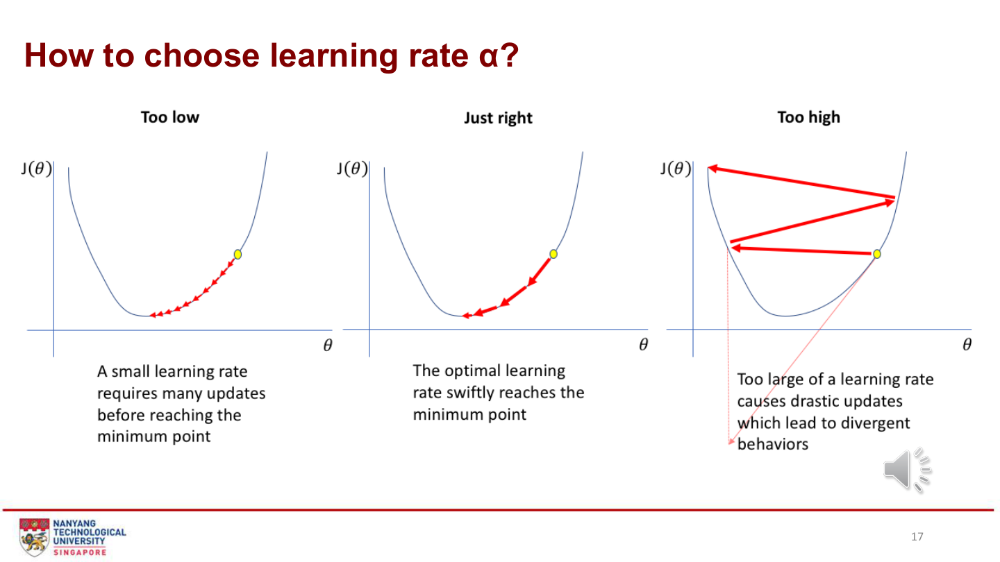
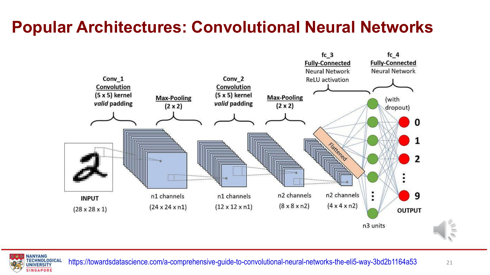
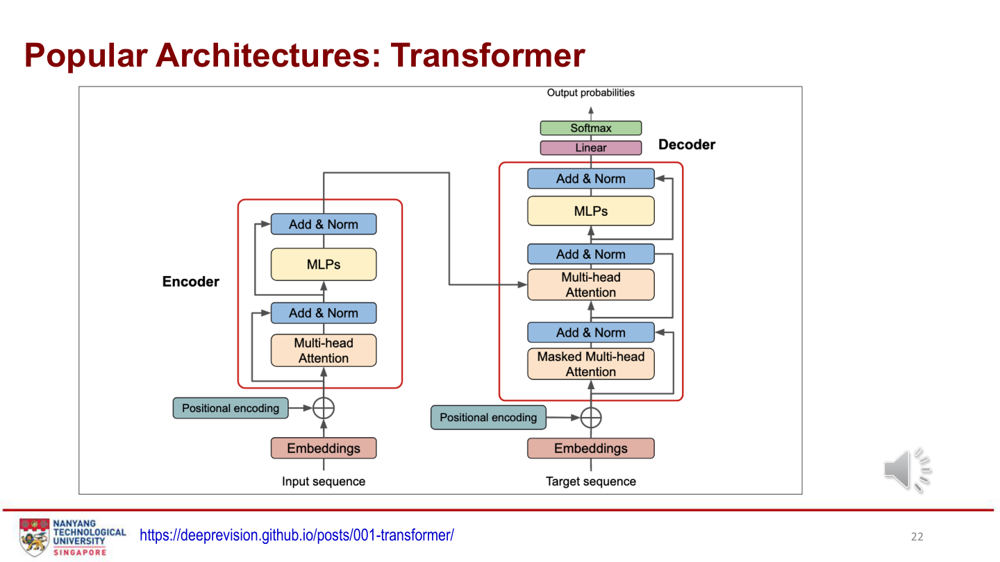
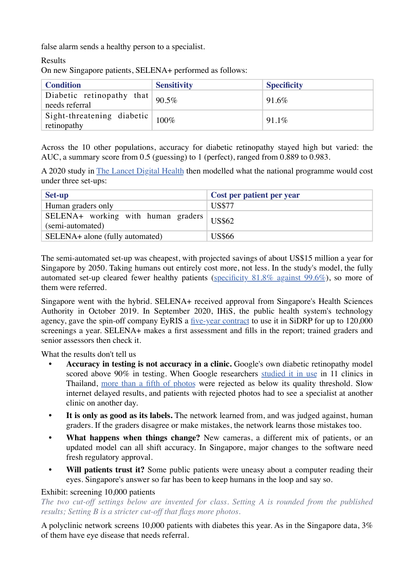
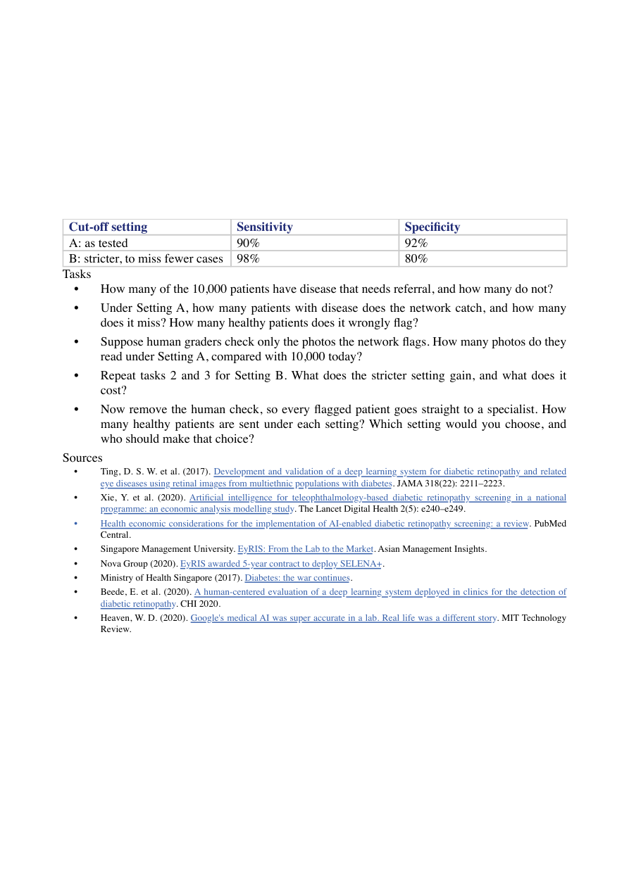

第三周：深度学习
深度学习 = 很多层的神经网络。主线是一个训练循环：前向传播算预测 → 算损失 → 反向传播算梯度 → 梯度下降更新权重。再认识 CNN 和 Transformer 两种架构，最后用 MNIST 练习和 SELENA 眼底筛查案例检验理解。
What Is Deep Learning?｜ML vs DL
本章图表 / 方法：生物神经元启发；ML 与 DL 对比表（第 3–5 页）。
- 深度学习起源于模仿大脑的算法：输入送进一个神经元，计算后传给下一个神经元。
- 深度学习是机器学习的子集，能在多个抽象层次上自动学习特征：低层特征（边缘）组合成高层模式（形状、物体）。
- 1980 年代就有，2005 年后复兴。
| 机器学习 | 深度学习 | |
|---|---|---|
| 特征提取 | 需要人工特征工程 | 特征自动学习 |
| 复杂度 | 处理较简单的问题 | 擅长复杂任务（视觉、NLP） |
| 数据 | 较小数据集即可 | 需要大量数据 |
| 算力 | CPU 就能跑 | 常需要 GPU / TPU |
Why the Resurgence of Deep Learning?｜为什么复兴
本章图表 / 方法：表现 vs 数据量曲线：传统 ML、浅层、中层、深层网络（第 6 页）。
课件曲线：数据少时传统 ML 起步快、不比深度网络差；数据变多后传统 ML 很早就到顶，深度网络持续上升。复兴的原因：数据更多 + 算力更强（GPU）+ 算法进步。
Building Blocks: Neural Networks｜一个神经元怎么算
本章图表 / 方法：人工神经元结构；生物神经元与人工神经元对照（第 7–8 页）。


| 符号 | 含义 | 对应生物神经元 |
|---|---|---|
| x | 输入 | Dendrites 树突 |
| w | 权重：这个输入有多重要（训练中学习） | Synapse 突触 |
| b | 偏置：另一个可学习的参数 | — |
| z = Σwᵢxᵢ + b | 求和 | Soma 胞体 |
| y = f(z) | 经过激活函数的输出 | Axon 轴突 |
算一个：x = (1, 2, 3)，w = (0.2, −0.5, 0.4)，b = −0.1 → z = 0.2 − 1.0 + 1.2 − 0.1 = 0.3；ReLU(0.3) = 0.3；sigmoid(0.3) ≈ 0.57。
Forward and Backward Propagation｜前向和反向
本章图表 / 方法：反向传播示意；前向与反向的使用时机和对比表（第 9–12 页）。
| 前向传播 | 反向传播 | |
|---|---|---|
| 用途 | 算预测 | 更新权重和偏置 |
| 方向 | 输入 → 输出 | 输出 → 输入 |
| 阶段 | 训练和推理都用 | 只在训练时 |
| 数学 | 矩阵乘法、激活函数 | 链式法则求梯度 |
反向传播三步：① 算误差（预测和真实差多少）② 把误差传回每一层的神经元 ③ 算误差对每个权重 w 的梯度。重复几千次后，权重和偏置达到最优。
推理（inference）：模型训练好后、权重固定，用来预测新数据，只做前向传播。
x, y = 2.0, 3.0 # 输入和真实值
w, b, lr = 1.0, 0.0, 0.1
pred = w * x + b # 前向：2.0
loss = (pred - y) ** 2 # 损失：1.0
grad_w = 2 * (pred - y) * x # 反向：-4.0（链式法则）
grad_b = 2 * (pred - y) # -2.0
w -= lr * grad_w # 梯度下降更新：w = 1.4
b -= lr * grad_b # b = 0.2 → 新预测 3.0易错：反向传播负责算梯度，梯度下降（优化器）负责用梯度更新权重，是两步。
Gradient Descent & Activation Functions｜梯度下降、激活函数、学习率
本章图表 / 方法：梯度下降示意；六种激活函数图；TensorFlow Playground；学习率太小 / 合适 / 太大三图（第 13–17 页）。
梯度下降：找让代价函数最小的 w 和 b（收敛）。从一个初始点出发，一步步往最低点走。更新：w ← w − α × 梯度。
为什么需要激活函数（第 14 页）
- 非线性：z = wx + b 是线性的。没有激活函数，叠多少层都等于一个线性模型。
- 学习复杂特征：图像、文本、语音。
- 梯度流动：控制梯度在层之间怎么传，帮助反向传播。


| 激活函数 | 公式 | 输出范围 | 记住 |
|---|---|---|---|
| Sigmoid | 1 / (1 + e⁻ˣ) | (0, 1) | σ(0) = 0.5；二分类输出 |
| tanh | tanh(x) | (−1, 1) | tanh(0) = 0，以 0 为中心 |
| ReLU | max(0, x) | [0, ∞) | 隐藏层最常用；负数输出 0 |
| Leaky ReLU | max(0.1x, x) | (−∞, ∞) | 负数时保留小斜率：x = −5 → −0.5 |
| Maxout | max(w₁ᵀx + b₁, w₂ᵀx + b₂) | — | 取两个线性输出中较大的 |
| ELU | x ≥ 0 时 x；否则 α(eˣ − 1) | — | 负区间平滑 |
多分类输出层用 softmax，把分数变成和为 1 的概率。例：logits (2, 1, 0) → (0.67, 0.24, 0.09)。
学习率 α 怎么选（第 17 页）


- 太小：要很多次更新才能到最低点。
- 合适：很快到达最低点。
- 太大：更新幅度剧烈，来回跳，导致发散（divergent）。例：w = 2，梯度 4，α = 1 → w = −2，直接跳过了最低点。
TensorFlow Playground（第 16 页）：在线调网络组件、看效果的互动工具。
Prediction & Fully Connected Layers｜预测与全连接层
本章图表 / 方法：回归与分类预测；全连接层的四个作用；识别鸟的 4 层网络（第 18–20 页）。
- 神经网络能自动学习哪些特征重要，是和传统机器学习不同的范式。先用大量数据训练，训练好后就能预测新数据。ChatGPT 的 P 就是 Pretrained。
- 回归：连续输出（年龄、收入）。分类：离散标签（猫或狗）。
| 全连接（Dense）层的作用 | 说明 |
|---|---|
| 组合特征 | 把前面提取的高层抽象特征变成适合做预测的形式 |
| 决策与输出 | 把特征变成分数，通常再接 softmax 得到类别概率 |
| 非线性 | 激活函数让网络学非线性关系 |
| 防过拟合 | Dropout：训练时随机关掉一部分神经元（推理时全部使用）；L2 正则：惩罚过大的权重 |
识别鸟的例子（第 20 页）：4 层网络 = 3 个隐藏层 + 1 个输出层；输入是鸟图片的像素，每个像素是 RGB 颜色强度。隐藏层很多的叫深度神经网络。
Popular Architectures: CNN｜卷积神经网络
本章图表 / 方法：手写数字识别 CNN：两轮卷积 + 池化 → 展平 → 全连接（第 21 页）。


- 卷积（valid padding，不补边）：输出边长 = 输入 − 卷积核 + 1。28 − 5 + 1 = 24。
- 2×2 最大池化：长宽各减半，24 → 12。
- 再来一轮：12 − 5 + 1 = 8 → 池化 → 4。展平成 4 × 4 × n2 个数，送进全连接层。
- 一般公式：⌊(N + 2P − K) / S⌋ + 1（N 输入、P 补边、K 卷积核、S 步幅）。第五周 CV 详细讲。
Popular Architectures: Transformer & Self-Attention
本章图表 / 方法：Transformer 编码器-解码器结构图；Attention 说明；“It was so agile” 的 self-attention 四步（第 22–24 页）。


- Attention：让网络聚焦输入中相关的部分，而不是平等对待所有部分。
- Self-attention：每个词都关注序列中所有其他词，能捕捉长距离依赖。
例句：“The quick brown fox jumped over the wall… It was so agile.” It 指什么？
- 输入表示：每个词变成向量（embedding）。
- Q、K、V 三个矩阵：Query 是当前关注的词，Key 代表所有其他词，Value 是词的实际信息。三个矩阵训练中学到。
- 算注意力分数：Q 和每个 K 做点积（相似度）→ 除以 √dₖ（梯度稳定）→ softmax 变成概率。
- 加权求和：每个词的 V 乘以它的分数再相加，得到融合了上下文的“It”的新表示。
第四周 NLP 有完整的数值例子（It 把 53.5% 的注意力放在 fox 上）。
Applications, Challenges and Limitations｜应用与局限
本章图表 / 方法：五大应用领域；五个局限（第 25–26 页）。
| 应用 | 局限 |
|---|---|
| 视觉：物体检测、人脸识别 | 数据要求高：量大且质量高 |
| NLP：翻译、情感分析 | 计算成本高：GPU / TPU |
| 医疗：诊断、药物发现 | 难解释：黑箱 |
| 自动系统：自动驾驶、机器人 | 伦理问题：偏差、滥用、隐私 |
| 金融：欺诈检测、算法交易 | 过拟合与泛化 |
Tutorial 1 · Basic Programming｜四道基础题
本章图表 / 方法：Deep_Learning_Tutorial.ipynb 的四道 Python 练习。
| 题目 | 答案 |
|---|---|
| 1 加权和：输入 [0.5, 0.8, 0.2]，权重 [0.3, 0.6, 0.1] | 0.15 + 0.48 + 0.02 = 0.65（逐项相乘再相加） |
| 2 实现 ReLU，测试 5、−2、0 | 5、0、0 |
| 3 Min-Max 归一化 [10, 20, 30, 40, 50] | (x − min) / (max − min) → [0, 0.25, 0.5, 0.75, 1] |
| 4 数 [1, −5, 3, −10, 7, 0, −2, 9] 中的正负数 | 正数 4 个，负数 3 个（0 都不算） |
weighted_sum = sum(x * w for x, w in zip([0.5, 0.8, 0.2], [0.3, 0.6, 0.1])) # 0.65
def relu(x):
return max(0, x)Tutorial 2 · Q1: MNIST Architecture｜设计一个识别手写数字的网络
本章图表 / 方法：Deep_Learning_Tutorial 2.ipynb Q1：输入、隐藏层、输出、激活函数、训练与评估。
题目：神经网络怎么学非线性？为 MNIST（28×28 灰度手写数字）设计网络，说明每层大小和激活函数。
| 层 | 大小 | 激活 | 理由 |
|---|---|---|---|
| 输入（Flatten） | 28 × 28 = 784 | — | 把图片拉成一维 |
| 隐藏层 1 | 128 | ReLU | 学非线性特征 |
| 隐藏层 2 | 64 | ReLU | 组合成更高层特征 |
| 输出 | 10 | Softmax | 数字 0–9 互斥，输出 10 个概率 |
x_train, x_test = x_train / 255.0, x_test / 255.0 # 像素归一化到 0–1
model = models.Sequential([
layers.Flatten(input_shape=(28, 28)),
layers.Dense(128, activation="relu"),
layers.Dense(64, activation="relu"),
layers.Dense(10, activation="softmax"),
])
model.compile(optimizer="adam", loss="sparse_categorical_crossentropy", metrics=["accuracy"])
model.fit(x_train, y_train, epochs=5, validation_split=0.1, batch_size=64)
y_pred = np.argmax(model.predict(x_test), axis=1) # 10 个概率 → 类别参数含义：epochs = 5：把训练集过 5 遍；batch_size = 64：每次用 64 张图更新一次；validation_split = 0.1：留 10% 做验证；sparse_categorical_crossentropy：标签是整数 0–9 时用的损失；Adam：优化器。
Tutorial 2 · Q2: Backpropagation Analysis｜房价总是高估 20%
本章图表 / 方法：Q2：系统性高估的原因、反向传播如何修正；Notebook 线性模型演示。
题目：用面积和卧室数预测房价的网络，总是高估约 20%。a) 可能原因？b) 反向传播怎么修正权重？
- 可能原因：偏置 b 太大；权重整体偏高；训练数据偏向高价房（和实际使用的人群不同）；特征没缩放；训练不够、没收敛。
- 怎么修正：预测偏高 → 误差 (ŷ − y) 为正 → MSE 对权重的梯度 = 平均的 2(ŷ − y)x，输入为正时梯度也为正 → 梯度下降
w ← w − α·梯度让权重变小；偏置梯度 = 平均的 2(ŷ − y)，同样让 b 变小。反复迭代，预测被拉回来。
Notebook 演示：真实关系是 价格 = 0.15 × 面积 + 20 × 卧室数 + 噪声；模型被故意设成 0.18 和 24（高 20%），再加 b = 50。做一步 SGD（学习率 1e-7，因为面积数值很大），可以看到梯度为正、权重被往下拉。
Tutorial 2 · Optional Q3: Overfitting｜训练 99%、验证 85%
本章图表 / 方法：选做题：命名现象、三种对策及代价；Notebook 正则化 MNIST 模型。
a) 现象：过拟合（训练集表现远好于验证集）。
| b) 方法 | 怎么起作用 | 代价 |
|---|---|---|
| Dropout(0.3) | 训练时随机关掉 30% 神经元，网络不能依赖个别神经元 | 太强会欠拟合；训练变慢 |
| L2(0.001) | 在损失中惩罚过大的权重，让模型更平滑 | 要调强度，太强削弱拟合 |
| Early stopping | 监控验证损失，连续几轮不改善就停，并恢复最佳权重 | 需要可靠的验证集；patience 太短可能停太早 |
c) 算力有限只能选一个：选 early stopping，它还能减少训练时间。
layers.Dense(128, activation="relu", kernel_regularizer=tf.keras.regularizers.l2(0.001)),
layers.Dropout(0.3),
early_stop = tf.keras.callbacks.EarlyStopping(monitor="val_loss", patience=2, restore_best_weights=True)Week 3 Case · SELENA+｜AI 眼底筛查
本章图表 / 方法：SELENA_DL_Case 第 1–2 页：问题背景、数据规模、敏感度 / 特异度、成本模型、部署限制。
问题：新加坡糖尿病患者的眼底照片很多，阅片人员有限。用有人工标注的照片训练深度网络，给出“需不需要转诊”的分数，由人设定阈值。
| 数据 | 数量 |
|---|---|
| 训练（糖尿病视网膜病变） | 76,370 张照片 |
| 新加坡独立评估 | 71,896 张，来自 14,880 名没参与训练的患者 |
| 外部评估 | 10 个人群的 40,752 张照片；AUC 0.889–0.983 |
| 结果 | Sensitivity | Specificity |
|---|---|---|
| 需转诊的糖尿病视网膜病变 | 90.5% | 91.6% |
| 威胁视力的糖尿病视网膜病变 | 100% | 91.1% |
- Sensitivity = TP / (TP + FN)：真有病的人里被识别出的比例（就是 recall）。
- Specificity = TN / (TN + FP)：真没病的人里被正确排除的比例。
- 成本（2020 年经济模型）：人工筛查每人每年 US$77，半自动 US$62，全自动 US$66。半自动最便宜。


SELENA Exhibit · 10,000 Patients｜阈值 A 还是 B
本章图表 / 方法：案例第 3 页：10,000 名患者、两个阈值、五个课堂任务。
课堂假设：10,000 人中 3% 需要转诊。阈值 A：sensitivity 90%、specificity 92%。阈值 B（更严格，更怕漏诊）：sensitivity 98%、specificity 80%。只有被标记的人才送人工审核。


| 阈值 A | 阈值 B | |
|---|---|---|
| 1 有病 / 没病 | 有病 10,000 × 3% = 300；没病 9,700 | |
| 2 识别出（TP） | 300 × 90% = 270 | 300 × 98% = 294 |
| 漏诊（FN） | 30 | 6 |
| 误报（FP） | 9,700 × 8% = 776 | 9,700 × 20% = 1,940 |
| 3 人工审核量（TP + FP） | 1,046（原来要看 10,000 张） | 2,234 |
- A vs B：B 少漏诊 24 人，但多误报 1,164 人，审核量多 1,188 张。没有唯一正确答案，要权衡漏诊的代价和人力。
- 如果取消人工审核：被误报的健康人会直接转诊到专科：A 是 776 人，B 是 1,940 人。
易错：只审核被标记的照片，发现不了模型漏掉的人（FN）。另外患病率只有 3% 时，全部判“没病”也有 97% 的 accuracy，所以要看 sensitivity 和 specificity。
自测
本章图表 / 方法：按考试常见题型整理，先自己答再展开。
1. ML 和 DL 的四点区别？
特征（人工 vs 自动学习）、复杂度（简单 vs 视觉 / NLP）、数据（少 vs 大量）、算力（CPU vs GPU / TPU）。
2. x = (2, 3)，w = (0.5, −1)，b = 1，求 z 和 ReLU 输出。
z = 1 − 3 + 1 = −1；ReLU = 0；sigmoid(−1) ≈ 0.27，判为 0。
3. 推理阶段用反向传播吗？
不用。推理只做前向传播；反向传播只在训练时用。
4. 去掉所有激活函数，3 层网络等于什么？
一个线性模型。线性叠线性还是线性。
5. 哪个激活函数输出范围是 (−1, 1)？x = −5 时 ReLU 和 Leaky ReLU 各输出多少？
tanh。ReLU = 0；Leaky ReLU = max(−0.5, −5) = −0.5。
6. 训练损失一直上升并来回震荡，原因？
学习率太大，更新跨过了最低点，导致发散。
7. 28×28 输入经过 5×5 卷积（valid）和 2×2 池化后多大？
28 − 5 + 1 = 24，池化后 12×12。
8. Self-attention 的四步？为什么要除以 √dₖ？
词向量 → Q、K、V → Q·K 点积、除以 √dₖ、softmax → 对 V 加权求和。除以 √dₖ 是为了梯度稳定。
9. MNIST 网络的输入和输出各多少个节点？输出层用什么激活？
输入 784（28 × 28），输出 10，softmax。
10. 训练 99%、验证 85%，给出三种对策。算力有限选哪个？
Dropout、L2 正则、early stopping。算力有限选 early stopping，还能省训练时间。
11. SELENA：患病率 3%、10,000 人、sensitivity 90%、specificity 92%，漏诊多少？审核多少？
漏诊 30 人；审核 TP 270 + FP 776 = 1,046 张。
12. Sensitivity 和 specificity 的公式？
Sensitivity = TP / (TP + FN)（就是 recall）；specificity = TN / (TN + FP)。